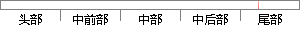

9: mSensorListener = new SensorEventListener(){.
片段位置图

相似结果|
相似片段 1：sensorManager．registerListener(new MSensorListener0，sensor,SENSOR_DELAY_FASTEST)；private class MSensorListener
相似片段 2： = new SensorEventListener() {public void onSensorChanged(SensorEvent event) {value = event.values
相似片段 3： //使用温度、湿度传感器=new SensorEventListener(){@Overridepublic void onAccuracyChanged(Sensor sensor,int
相似片段 4：当前传感器的数据。1 private SensorEventListener orlistener = new SensorEventListener(){2 public void
相似片段 5： private SensorEventListener acListener = new SensorEventListener(){2 public void onSensorChanged
相似片段 6： listener = new SensorEventListener(){public void onSensorChanged(SensorEvent event) {PLICamera camera
相似片段 7： listener = new SensorEventListener(){public void onSensorChanged(SensorEvent event) {PLICamera camera
相似片段 8：3.5.2 传感器事件监听private SensorEventListener mySensorListener = new SensorEventListener() {public void
相似片段 9：下面再介绍一下这个监听器类的设计。1 SensorEventListener sl = new SensorEventListener() {2 @Override3 public void
|
※ 片段修改建议 ※
近似词参考：